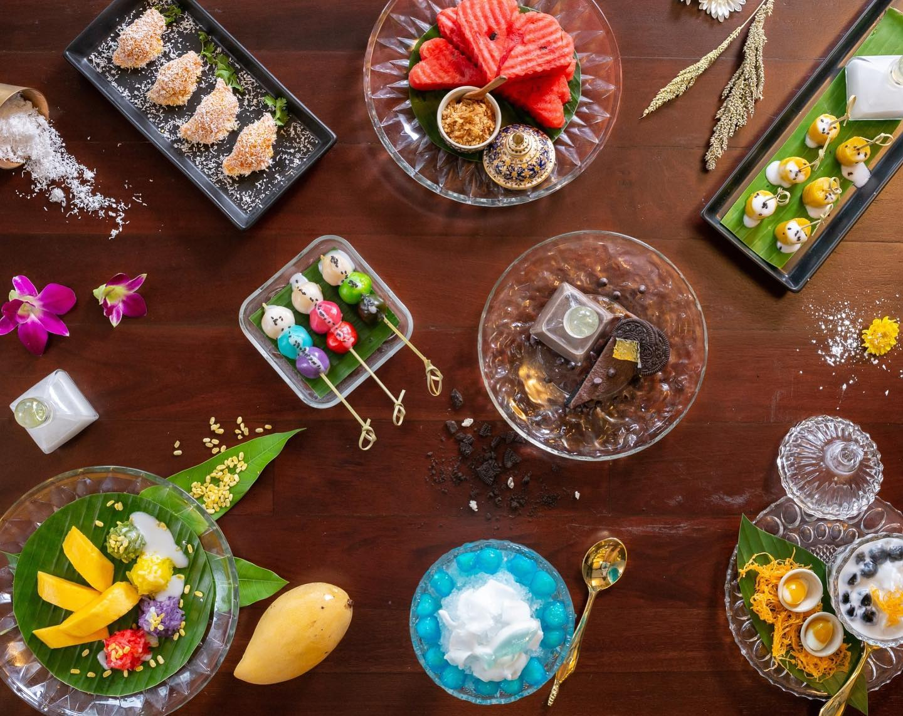

มีเอกลักษณ์ด้านวัฒนธรรมประจำชาติไทยคือ มีความละเอียดอ่อนประณีตในการเลือกสรรวัตถุดิบ วิธีการทำ ที่พิถีพิถัน รสชาติอร่อยหอมหวาน สีสันสวยงาม รูปลักษณ์ชวนรับประทาน ตลอดจนกรรมวิธีการจัดจานที่ประณีตและบรรจง
ทางเราได้ทำการรวบรวมขนมไทยโบราณ 7 อย่างมานำเสนอให้ทุกท่านได้รู้จักโดยมีทั้งหมดดังนี้